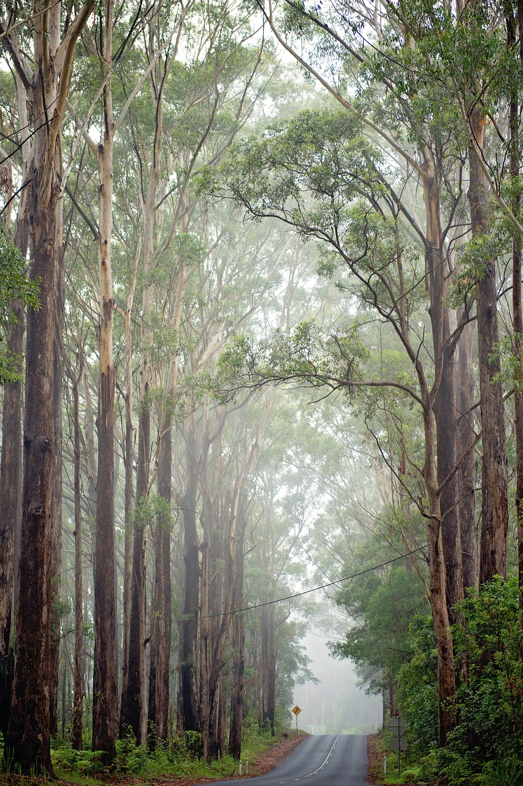

?
✓
?
เพื่อนๆ รู้ไหมว่า
มีสัตว์ตัวนึง
ที่ขี้ออกมา
เป็นลูกเต๋า
เจ้าตัวนี้คือ
วอมแบต
สัตว์ป่าจากออสเตรเลีย
หลายคนคิดว่า
รูก้นของมัน
คงเป็นสี่เหลี่ยม
แต่ความจริงคือ
รูก้นมันกลม
เหมือนสัตว์ทั่วไปเลย
นักวิทยาศาสตร์
เลยเข้าไปดู
ในลำไส้
แล้วพบว่า
ผนังลำไส้
ช่วงท้าย
มีส่วนแข็ง
กับส่วนนิ่ม
สลับกัน
ส่วนแข็ง
บีบตัวเร็วกว่า
เลยค่อยๆ
กดก้อนขี้
จนเกิดมุม
บวกกับก้อนขี้
ที่แห้งลงเรื่อยๆ
พอออกมา
เลยกลายเป็น
ลูกเต๋าเหลี่ยมเป๊ะ
ทั้งที่ออกจาก
รูกลมๆ นั่นเอง
แล้วเพื่อนๆ ว่า
มันขี้เป็นเหลี่ยม
ไปเพื่ออะไรกันน้า?
คอมเมนต์บอกหน่อย!
There's an animal
on this planet
that poops
perfect little cubes.
Meet the wombat,
straight out of
Australia.
So you'd think
its butt
must be square,
right?
Nope.
It's round,
just like everyone else's.
When scientists
looked inside,
they found the end
of its gut
has stiff
and stretchy sections
side by side.
The stiff parts
squeeze faster,
slowly pressing
corners into
the poop,
and as it dries
out on the way,
it comes out
as a perfect cube
from a perfectly
round hole.
So why would
an animal need
square poop?
Tell me in the
comments.